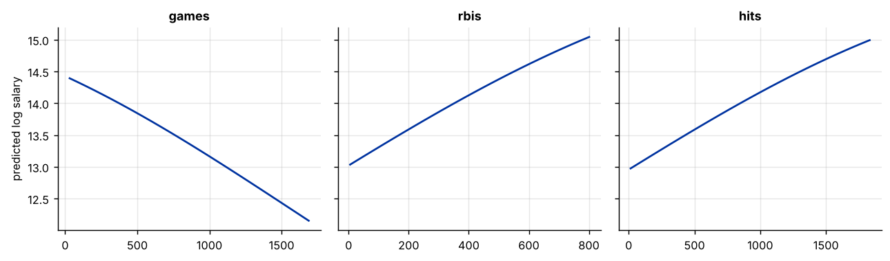

Step 1The question and the model
How well can a baseball player's log salary be predicted from his career record? The file holds the 1993 salaries of 353 Major League Baseball players and fifteen career statistics. Performance enters salaries smoothly but not linearly, and the statistics are highly correlated (hits, runs and at-bats move together).
Support vector regression (Drucker et al. 1997) fits a function that stays within a tube of half-width \(\varepsilon\) around the data and penalises only the points that fall outside it:
The penalty \(C\) controls how hard errors are punished. With the Gaussian kernel \(k(x,x')=\exp(-\gamma\lVert x-x'\rVert^2)\) the function can be curved, and \(\gamma\) controls how local that curvature is. Only observations on or outside the tube become support vectors and shape the fit.
What SVR can and cannot do
SVR needs standardised predictors and a standardised outcome, because the penalty and the kernel are scale dependent. It gives no coefficients and no standard errors. It is a prediction tool, and the tuning (\(C\), \(\gamma\)) must be done inside the training data.
How to write it: model section
We predict log salary with epsilon-insensitive support vector regression using a Gaussian kernel (Drucker et al. 1997). Predictors and outcome are standardised, the penalty C and kernel width gamma are chosen by three-fold cross-validation on the training sample, and performance is evaluated on a held-out test sample against LASSO and a random forest.
Step 2Load the data and split it
import warnings; warnings.filterwarnings("ignore")
import numpy as np, pandas as pd
import matplotlib.pyplot as plt
from sklearn.model_selection import train_test_split, GridSearchCV, KFold, cross_val_predict
from sklearn.pipeline import make_pipeline
from sklearn.preprocessing import StandardScaler
from sklearn.compose import TransformedTargetRegressor
from sklearn.svm import SVR
from sklearn.linear_model import LassoCV
from sklearn.ensemble import RandomForestRegressor
from sklearn.metrics import mean_squared_error
df = pd.read_csv("mlb1.csv")
y = df["lsalary"]; X = df.drop(columns="lsalary")
Xtr, Xte, ytr, yte = train_test_split(X, y, test_size=0.25, random_state=1)
print(f"{len(df)} players, {X.shape[1]} predictors; training {len(Xtr)}, test {len(Xte)}")
print(f"log salary: mean {y.mean():.2f}, sd {y.std():.2f}")
print("Largest correlations among predictors:")
c = X.corr().abs().where(np.triu(np.ones((X.shape[1],) * 2), 1).astype(bool)).stack().sort_values(ascending=False)
print(c.head(5).round(2).to_string())353 players, 15 predictors; training 264, test 89
log salary: mean 13.49, sd 1.18
Largest correlations among predictors:
atbats hits 0.99
games atbats 0.99
hits 0.98
runs hits 0.96
atbats runs 0.96How to read it
There are 264 training players and 89 test players. Log salary has a mean of 13.49 and a standard deviation of 1.18. The career statistics are almost collinear: at-bats and hits correlate at 0.99, games and at-bats at 0.99. Collinearity hurts coefficient interpretation but not prediction, and a kernel method works on distances between players, so it is not troubled by it.
Step 3Fit SVR and tune the penalty and kernel width
def svr_model(C=1.0, gamma="scale", eps=0.1, kernel="rbf"):
return TransformedTargetRegressor(
regressor=make_pipeline(StandardScaler(), SVR(kernel=kernel, C=C, gamma=gamma, epsilon=eps)),
transformer=StandardScaler())
grid = GridSearchCV(
svr_model(),
{"regressor__svr__C": [0.1, 0.5, 1, 2, 5, 10, 50],
"regressor__svr__gamma": [0.003, 0.01, 0.0167, 0.03, 0.1]},
cv=KFold(3, shuffle=True, random_state=1), scoring="neg_root_mean_squared_error").fit(Xtr, ytr)
best = grid.best_params_
print("Chosen C =", best["regressor__svr__C"], " gamma =", best["regressor__svr__gamma"])
print(f"3-fold CV RMSE of the chosen model (log salary): {-grid.best_score_:.4f}")
res = pd.DataFrame(grid.cv_results_)
tab = res.pivot_table(index="param_regressor__svr__C", columns="param_regressor__svr__gamma", values="mean_test_score").mul(-1)
print("\nCross-validated RMSE by C (rows) and gamma (columns)")
print(tab.round(3).to_string())Chosen C = 50 gamma = 0.01 3-fold CV RMSE of the chosen model (log salary): 0.6159 Cross-validated RMSE by C (rows) and gamma (columns) param_regressor__svr__gamma 0.0030 0.0100 0.0167 0.0300 0.1000 param_regressor__svr__C 0.1 0.973 0.839 0.804 0.784 0.802 0.5 0.804 0.735 0.710 0.685 0.684 1.0 0.758 0.714 0.679 0.650 0.669 2.0 0.728 0.681 0.640 0.632 0.667 5.0 0.734 0.637 0.621 0.631 0.682 10.0 0.732 0.617 0.620 0.632 0.710 50.0 0.657 0.616 0.646 0.671 0.808
How to read it
Cross-validation picks C = 50 and gamma = 0.01, with a three-fold RMSE of 0.616 in log points. The grid shows how the two parameters trade off: a small C underfits (RMSE 0.97 at C = 0.1, gamma = 0.003), a large gamma with a large C overfits (0.81 at C = 50, gamma = 0.1), and the good region is a diagonal valley. Several neighbouring cells (0.617, 0.620, 0.621) are almost as good, so the choice is not delicate. If the chosen cell were on the edge of the grid you would extend the grid; here C = 50 is the top row and the RMSE is flat between C = 5 and 50 at gamma = 0.01, which is acceptable.
Step 4Test it honestly against LASSO and a random forest
svr = grid.best_estimator_
lasso = make_pipeline(StandardScaler(), LassoCV(cv=5, random_state=1)).fit(Xtr, ytr)
rf = RandomForestRegressor(500, min_samples_leaf=3, random_state=1).fit(Xtr, ytr)
rows = {}
for lab, m in [("Mean only", None), ("LASSO", lasso), ("Random forest", rf), ("SVR (Gaussian kernel)", svr)]:
p = np.full(len(yte), ytr.mean()) if m is None else m.predict(Xte)
rows[lab] = {"test RMSE": mean_squared_error(yte, p) ** .5, "test R2": 1 - ((yte - p) ** 2).sum() / ((yte - yte.mean()) ** 2).sum()}
print(pd.DataFrame(rows).T.round(4).to_string())
sv = svr.regressor_.named_steps["svr"]
print(f"\nSupport vectors: {len(sv.support_)} of {len(Xtr)} training players ({len(sv.support_) / len(Xtr):.1%})")test RMSE test R2 Mean only 1.0773 -0.0291 LASSO 1.0166 0.0835 Random forest 0.6687 0.6035 SVR (Gaussian kernel) 0.6945 0.5723 Support vectors: 204 of 264 training players (77.3%)
How to read it
On the 89 held-out players the mean-only benchmark has an RMSE of 1.077. LASSO, which is linear, reaches only 1.017 (R² 0.08), and an ordinary linear regression is no better (1.016): the salary is not a linear function of the statistics. SVR reaches an RMSE of 0.695 (R² 0.57) and the random forest 0.669 (R² 0.60). So SVR captures most of the nonlinearity and is within about 0.03 log points of the forest, a difference that is small relative to the sampling noise of an 89-player test sample. 204 of 264 training players (77 per cent) are support vectors, which is normal with a narrow tube.
Step 5Does the kernel matter? Linear versus Gaussian SVR, and the width of the tube
cv = KFold(5, shuffle=True, random_state=2)
def cv_rmse(model):
p = cross_val_predict(model, Xtr, ytr, cv=cv)
return mean_squared_error(ytr, p) ** .5
rows = []
rows.append(("linear kernel, C=1", cv_rmse(svr_model(kernel="linear"))))
for e in [0.0, 0.1, 0.3, 0.6]:
rows.append((f"Gaussian, tuned C and gamma, epsilon={e}",
cv_rmse(svr_model(C=best["regressor__svr__C"], gamma=best["regressor__svr__gamma"], eps=e))))
print(pd.DataFrame(rows, columns=["model", "5-fold CV RMSE"]).round(4).to_string(index=False))
sv_counts = []
for e in [0.0, 0.1, 0.3, 0.6]:
m = svr_model(C=best["regressor__svr__C"], gamma=best["regressor__svr__gamma"], eps=e).fit(Xtr, ytr)
sv_counts.append((e, len(m.regressor_.named_steps["svr"].support_) / len(Xtr)))
print("\nShare of training players that are support vectors")
print(pd.DataFrame(sv_counts, columns=["epsilon", "share"]).round(3).to_string(index=False)) model 5-fold CV RMSE
linear kernel, C=1 0.9044
Gaussian, tuned C and gamma, epsilon=0.0 0.6408
Gaussian, tuned C and gamma, epsilon=0.1 0.6295
Gaussian, tuned C and gamma, epsilon=0.3 0.6463
Gaussian, tuned C and gamma, epsilon=0.6 0.6667
Share of training players that are support vectors
epsilon share
0.0 1.000
0.1 0.773
0.3 0.455
0.6 0.242How to read it
A linear-kernel SVR has a cross-validated RMSE of 0.904, against 0.63 for the Gaussian kernel, so the curvature is what matters. The tube width has a mild effect: epsilon = 0.1 is best (0.630), epsilon = 0 is slightly worse (0.641) and a wide tube of 0.6 is worse again (0.667). Epsilon controls sparsity: the share of support vectors falls from 100 per cent at epsilon = 0 to 24 per cent at 0.6. Wider tubes give a smaller model at some cost in accuracy.
Step 6What the fitted surface looks like: partial dependence
from sklearn.inspection import partial_dependence, permutation_importance
imp = permutation_importance(svr, Xte, yte, n_repeats=30, random_state=1, scoring="neg_root_mean_squared_error")
order = np.argsort(-imp.importances_mean)
print("Permutation importance (increase in test RMSE when the predictor is shuffled)")
print(pd.DataFrame({"predictor": X.columns[order], "importance": imp.importances_mean[order].round(4),
"sd": imp.importances_std[order].round(4)}).head(6).to_string(index=False))
top = list(X.columns[order[:3]])
fig, ax = plt.subplots(1, 3, figsize=(10, 3), sharey=True)
for a, f in zip(ax, top):
pdp = partial_dependence(svr, Xtr, [f], grid_resolution=30)
a.plot(pdp["grid_values"][0], pdp["average"][0], color="#0033a0"); a.set_title(f); a.grid(alpha=.3)
ax[0].set_ylabel("predicted log salary"); plt.tight_layout()Permutation importance (increase in test RMSE when the predictor is shuffled)
predictor importance sd
games 0.6011 0.0768
rbis 0.3425 0.0752
hits 0.3000 0.0643
years 0.2715 0.0370
runs 0.1994 0.0469
atbats 0.0757 0.0336
How to read it
Permutation importance measures how much the test error rises when one predictor is shuffled. Games played comes first (0.60), then runs batted in (0.34), hits (0.30) and years in the league (0.27). Because games, at-bats and hits are almost the same variable, shuffling one of them while keeping the others leaves some of the information intact, so the importance of a group of correlated variables is spread out and individual values understate it. Read the partial dependence plots as the shape of the average relationship between each predictor and predicted log salary, holding the others at their observed values; a straight line would mean that a linear model was enough.
Step 7What to report in the paper
| Item | What to give |
|---|---|
| Sample and split | Number of observations, training and test sizes, and the random seed |
| Preprocessing | Standardisation of predictors and outcome |
| Tuning | Kernel, grid for C and gamma, epsilon, and the chosen values |
| Out-of-sample accuracy | Test RMSE and R² next to a benchmark (mean, linear, LASSO, forest) |
| Complexity | Share of support vectors |
| Interpretation | Permutation importance and partial dependence, with a note on correlated predictors |
How to write it: results section
On the held-out sample of 89 players, a Gaussian-kernel support vector regression (C = 50, gamma = 0.01, epsilon = 0.1, tuned by three-fold cross-validation) attains a test RMSE of 0.695 in log salary (R² = 0.57), compared with 1.017 for LASSO and 0.669 for a random forest. Games played, runs batted in, hits and years in the league are the most important predictors by permutation importance.
Step 8Common mistakes
- Forgetting to standardise. Without it the kernel is dominated by the variables with the largest units.
- Tuning on the test sample. Choose C and gamma inside the training data only.
- Reading permutation importance of correlated predictors as separate effects.
- Expecting a confidence interval. SVR has none; use the test error and, if needed, a bootstrap of the test errors.
- Using SVR for causal effects. It predicts; it does not identify.
- Using it on a very large sample. Fitting time grows quickly with n; use a forest or boosting above a few thousand observations.